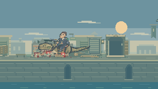
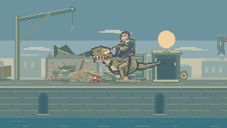
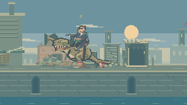
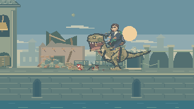
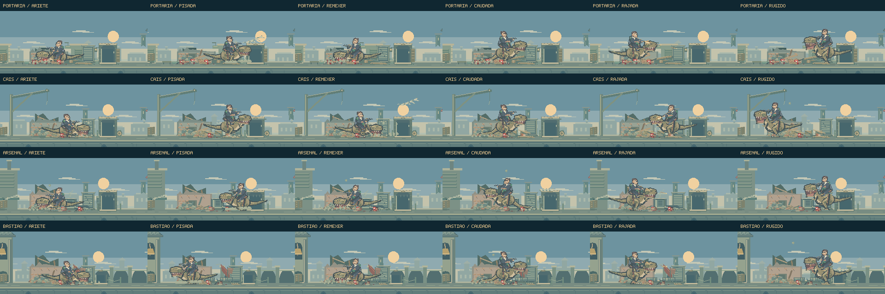

A rua continua
sob pressão.
Enquanto Feka enfrenta a guarnição, o cavaleiro e o dinossauro continuam agindo no fundo. Seis ações se combinam com deslocamentos, viradas e recuperações, em uma sequência que segue enquanto o jogador permanece no pátio.
Jogar o encontroVer a sequência- Investida
- Pisada
- Remexer
- Caudada
- Rajadas
- Rugido
Um minuto nos quatro pátios.
Composições dirigidas com o renderizador do jogo, sem áudio. Os primeiros 40 segundos mantêm o enquadramento; os últimos 20 exploram mudanças de posição dentro do mesmo pátio. Não é uma partida gravada nem uma avaliação da dificuldade.
A sequência muda de ordem a cada volta e evita as duas últimas ações quando existem alvos compatíveis. A animação separa preparação, esforço, contato e recuperação. A apresentação da rua seguinte assume o controle quando Feka avança.

Peso e intenção.
As investidas baixam a cabeça antes do impacto. Nas pisadas, as pernas recolhem e o corpo comprime ao pousar. A cauda prepara o movimento antes de varrer o material, e o cavaleiro acompanha essas mudanças com o tronco e as rédeas.
Remexer os materiais usa três contatos menores. O rugido muda a postura, tem som próprio no jogo e provoca reações no ambiente.
Rajadas com pausa e resposta.
O cavaleiro se posiciona, aponta para uma estrutura e dispara em dois grupos. A ponta da arma acompanha o recuo e a orientação do corpo. Luz, estojos, traçantes e impactos vêm do mesmo movimento.
Madeira, pedra e metal respondem de maneiras diferentes. A estrutura metálica acumula marcas e se deforma; os pequenos fragmentos se dissipam, mantendo o primeiro plano legível.

O cenário guarda as consequências.


Os objetos permanecem danificados e as pessoas que alcançaram abrigo continuam lá. As aves retornam gradualmente e só podem ser espantadas outra vez depois de pousar. Os efeitos têm duração limitada, permitindo que a atividade continue sem acumular partículas indefinidamente.
Seis ações em cada rua.

O diretor escolhe alvos dentro do enquadramento e reposiciona o personagem entre as ações. Quando uma intervenção inicial fica fora da câmera, uma atividade local ocupa a espera. Ao reencontrar o alvo, a sequência inicial pode continuar.
O ciclo não tem um estado final enquanto a rua permanece ativa. Pausa do jogo e mudança de etapa continuam controlando a cena normalmente. Movimento reduzido suaviza os efeitos decorativos.
Tempos, regras e construção · Registro da composição · Rotas dos quatro pátios
Publicação com build de produção, sem suíte de testes, typecheck ou revisão de navegador, conforme as instruções do projeto.